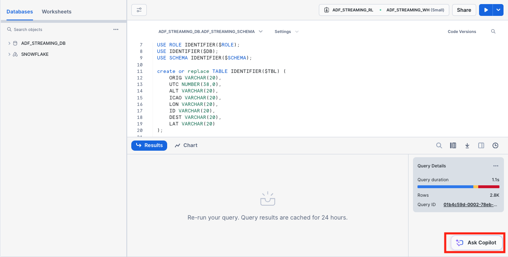
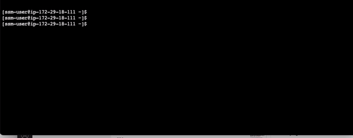

Snowflake's Snowpipe streaming capabilities are designed for rowsets with variable arrival frequency. It focuses on lower latency and cost for smaller data sets. This helps data workers stream rows into Snowflake without requiring files with a more attractive cost/latency profile.
Here are some of the use cases that can benefit from this integration:
- IoT time-series data ingestion
- CDC streams from OLTP systems
- Log ingestion from SIEM systems
- Ingestion into ML feature stores
In our demo, we will use real-time commercial flight data over the San Francisco Bay Area from the Opensky Network to illustrate the solution leveraging the native integration between Snowflake and ADF (Amazon Data Firehose).
The architecture diagram below shows the deployment. A Linux EC2 instance (jumphost) will be provisioned in the subnet of an AWS VPC. The Linux jumphost will host the data producer that ingests real-time flight data into the Firehose delivery stream.
The data producer calls the data sources' REST API and receives time-series data in JSON format. This data is then ingested into the Firehose delivery stream and delivered to a Snowflake table. The data in Snowflake table can be visualized in real-time with AMG (Amazon Managed Grafana) and Streamlit The historical data can also be analyzed by BI tools like Amazon Quicksight. Please note that in the demo, we are not demonstrating the visualization aspect. We will have a future Quickstart demo that focuses on visualization.


Prerequisites
- Familiarity with Snowflake, basic SQL knowledge, Snowsight UI and Snowflake objects
- Familiarity with AWS Services (e.g. EC2, ADF, etc), Networking and the Management Console
- Basic knowledge of Python and Linux shell scripting
What You'll Need Before the Lab
To participate in the virtual hands-on lab, attendees need the following resources.
- A Snowflake Enterprise Account on preferred AWS region with
ACCOUNTADMINaccess - An AWS Account with
Administrator Access - Create your own VPC and subnets (This is optional if you have an existing VPC with subnets you can leverage.
- In the AWS account, create a VPC, preferably in the same region as the Snowflake account
- In the VPC, create subnets and attach an internet gateway to allow egress traffic to the internet by using a routing table and security group for outbound traffic. Note that the subnets can be public or private, for private subnets, you will need to attach a NAT gateway to allow egress traffic to the internet. Public subnets are sufficient for this lab.
- If you have decided to create your own VPC/subnets, for your convenience, click here to deploy a VPC with a pair of public and private subnets, internet gateway and NAT gateway for you. Note that you must have network administrator permissions to deploy these resources.
What You'll Learn
- Using ADF (Amazon Data Firehose)
- Connecting to EC2 instances with Amazon System Session Manager, this is an alternative to SSH if your instance is in a private subnet
- Using SnowSQL, the command line client for connecting to Snowflake to execute SQL queries and perform all DDL and DML operations, including loading data into and unloading data out of database tables.
- Using Snowflake to query tables populated with time-series data
What You'll Build
- Create an ADF delivery stream
- Setup
Direct Putas the source for the ADF delivery stream - Setup
Snowflakeas the destination for the ADF delivery stream - Optionally, secure the connection between Snowflake and ADF with Privatelink. Note Snowflake Business Critical Edition and above is a pre-requisite for Privatelink.
- A Snowflake database and table for hosting real-time flight data
1. Create an EC2 instance
First, click here to launch an EC2 instance(jumphost) with Cloudformation. Note the default AWS region is us-west-2 (Oregon), at the time of writing this quickstart, three regions are available for this integration preview: us-east-1, us-west-2, and eu-west-1.
For Subnet1, in the drop-down menu, pick an existing subnet, it can be either public or private subnets depending on the network layout of your VPC.
For InstanceSecurityGroupId, we recommend using the default security group in your VPC, if you do not have the default security group, create one on your own before moving forward.
Click Next at the Create stack page. Set the Stack name or modify the default value to customize it to your identity.
See below sample screen capture for reference.

Leave everything as default in the Configure stack options page and click Next. In the Review page, click Submit.
In about 5 minutes, the Cloudformation template provisions a Linux EC2 instance in the subnet you selected. We will then use it to run the ADF producer for data ingestion.
2. Configure the Linux session for timeout and default shell
In this step we need to connect to the EC2 instance in order to ingest the real-time data.
Go to the AWS Systems Manager console in the same region where you setup the EC2 instance, Click Session Manager on the left pane.

Next, we will set the preferred shell as bash.
Click the Preferences tab. 
Click the Edit button. 
Go to General preferences section, type in 60 minutes for idle session timeout value.

Further scroll down to Linux shell profile section, and type in /bin/bash before clicking Save button.

3. Connect to the Linux EC2 instance console
Now go back to the Session tab and click the Start session button. 
Now you should see the EC2 instance created by the Cloudformation template under Target instances. Its name should be Start session.

4. Create a key-pair to be used for authenticating with Snowflake
Create a key pair in AWS Session Manager console by executing the following commands. You will be prompted to give an encryption password, remember this phrase, you will need it later.
cd $HOME
openssl genrsa 2048 | openssl pkcs8 -topk8 -inform PEM -out rsa_key.p8
See below example screenshot:

Next we will create a public key by running following commands. You will be prompted to type in the phrase you used in above step.
openssl rsa -in rsa_key.p8 -pubout -out rsa_key.pub
see below example screenshot:

Next we will print out the public and private key string in a correct format that we can use for configuration later.
grep -v KEY rsa_key.pub | tr -d '\n' | awk '{print $1}' > pub.Key
cat pub.Key
grep -v KEY rsa_key.p8 | tr -d '\n' | awk '{print $1}' > priv.Key
cat priv.Key
see below example screenshot:

1. Creating user, role, and database
First login to your Snowflake account as a power user with ACCOUNTADMIN role. Then run the following SQL commands in a worksheet to create a user, database and the role that we will use in the lab.
-- Set default value for multiple variables
-- For purpose of this workshop, it is recommended to use these defaults during the exercise to avoid errors
-- You should change them after the workshop
SET PWD = 'Test1234567';
SET USER = 'STREAMING_USER';
SET DB = 'ADF_STREAMING_DB';
SET WH = 'ADF_STREAMING_WH';
SET ROLE = 'ADF_STREAMING_RL';
USE ROLE ACCOUNTADMIN;
-- CREATE USERS
CREATE USER IF NOT EXISTS IDENTIFIER($USER) PASSWORD=$PWD COMMENT='STREAMING USER';
-- CREATE ROLES
CREATE OR REPLACE ROLE IDENTIFIER($ROLE);
-- CREATE DATABASE AND WAREHOUSE
CREATE DATABASE IF NOT EXISTS IDENTIFIER($DB);
USE IDENTIFIER($DB);
CREATE OR REPLACE WAREHOUSE IDENTIFIER($WH) WITH WAREHOUSE_SIZE = 'SMALL';
-- GRANTS
GRANT CREATE WAREHOUSE ON ACCOUNT TO ROLE IDENTIFIER($ROLE);
GRANT ROLE IDENTIFIER($ROLE) TO USER IDENTIFIER($USER);
GRANT OWNERSHIP ON DATABASE IDENTIFIER($DB) TO ROLE IDENTIFIER($ROLE);
GRANT USAGE ON WAREHOUSE IDENTIFIER($WH) TO ROLE IDENTIFIER($ROLE);
-- SET DEFAULTS
ALTER USER IDENTIFIER($USER) SET DEFAULT_ROLE=$ROLE;
ALTER USER IDENTIFIER($USER) SET DEFAULT_WAREHOUSE=$WH;
-- RUN FOLLOWING COMMANDS TO FIND YOUR ACCOUNT IDENTIFIER, COPY IT DOWN FOR USE LATER
-- IT WILL BE SOMETHING LIKE <organization_name>-<account_name>
-- e.g. ykmxgak-wyb52636
WITH HOSTLIST AS
(SELECT * FROM TABLE(FLATTEN(INPUT => PARSE_JSON(SYSTEM$allowlist()))))
SELECT REPLACE(VALUE:host,'.snowflakecomputing.com','') AS ACCOUNT_IDENTIFIER
FROM HOSTLIST
WHERE VALUE:type = 'SNOWFLAKE_DEPLOYMENT_REGIONLESS';
Please write down the Account Identifier, we will need it later. 
We need to retrieve the Snowflake private account URL for use later, run below SQL command now and record the output, e.g. https://xyz12345.us-west-2.privatelink.snowflakecomputing.com
with PL as
(SELECT * FROM TABLE(FLATTEN(INPUT => PARSE_JSON(SYSTEM$GET_PRIVATELINK_CONFIG()))) where key = 'privatelink-account-url')
SELECT concat('https://'|| REPLACE(VALUE,'"','')) AS SNOWFLAKE_PRIVATE_ACCOUNT_URL
from PL;
Now we need to retrieve the value of VPCE ID for use later, run below SQL command now and record the output, e.g. com.amazonaws.vpce.us-west-2.vpce-svc-xyzabce999777333f1.
with PL as
(SELECT * FROM TABLE(FLATTEN(INPUT => PARSE_JSON(SYSTEM$GET_PRIVATELINK_CONFIG()))) where key = 'privatelink-vpce-id')
SELECT REPLACE(VALUE,'"','') AS PRIVATE_LINK_VPCE_ID
from PL;
Next we need to configure the public key for the streaming user to access Snowflake programmatically.
First, in the Snowflake worksheet, replace < pubKey > with the content of the file /home/azureuser/pub.Key (see step 4 in section #2 Provision a Linux jumphost in AWS located in the left pane) in the following SQL command and execute.
use role accountadmin;
alter user streaming_user set rsa_public_key='< pubKey >';
See below example screenshot:

Now logout of Snowflake, sign back in as the default user streaming_user we just created with the associated password (default: Test1234567). Run the following SQL commands in a worksheet to create a schema (e.g. ADF_STREAMING_SCHEMA) in the default database (e.g. ADF_STREAMING_DB):
SET DB = 'ADF_STREAMING_DB';
SET SCHEMA = 'ADF_STREAMING_SCHEMA';
USE IDENTIFIER($DB);
CREATE OR REPLACE SCHEMA IDENTIFIER($SCHEMA);
2. Install SnowSQL (optional but highly recommended)
SnowSQL is the command line client for connecting to Snowflake to execute SQL queries and perform all DDL and DML operations, including loading data into and unloading data out of database tables.
To install SnowSQL. Execute the following commands on the Linux Session Manager console:
curl https://sfc-repo.snowflakecomputing.com/snowsql/bootstrap/1.2/linux_x86_64/snowsql-1.2.24-linux_x86_64.bash -o /tmp/snowsql-1.2.24-linux_x86_64.bash
echo -e "~/bin \n y" > /tmp/ans
bash /tmp/snowsql-1.2.24-linux_x86_64.bash < /tmp/ans
See below example screenshot:

Next set the environment variable for Snowflake Private Key Phrase:
export SNOWSQL_PRIVATE_KEY_PASSPHRASE=<key phrase you set up when running openssl previously>
Note that you should add the command above in the ~/.bashrc file to preserve this environment variable across sessions.
echo "export SNOWSQL_PRIVATE_KEY_PASSPHRASE=$SNOWSQL_PRIVATE_KEY_PASSPHRASE" >> ~/.bashrc
Now you can execute this command to interact with Snowflake:
$HOME/bin/snowsql -a <The Account Identifier that you recorded earlier> -u streaming_user --private-key-path $HOME/rsa_key.p8 -d adf_streaming_db -s adf_streaming_schema
See below example screenshot:

Type Ctrl-D to get out of SnowSQL session.
You can edit the ~/.snowsql/config file to set default parameters and eliminate the need to specify them every time you run snowsql.
At this point, the Snowflake setup is complete.
In this step, we are going to create an ADF delivery stream for data streaming.
Navigate to the ADF console and click Create delivery stream.
In the Source section, select Direct PUT from the drop-down menu. Optionally, you can pick Kinesis Data Streams as the source, but we will focus on Direct Put in this workshop.
In the Destination section, select Snowflake from the drop-down menu.
Type in a name for the Firehose stream name.

Skip Transform records setup.
For Snowflake account URL, enter the URL you recorded previously from step 1 in Chapter 3, e.g. https://xyz12345.us-west-2.privatelink.snowflakecomputing.com.
Note here we are going to use Amazon PrivateLink (Note, Snowflake Business Critical Edition or above is required) to secure the communication between Snowflake and ADF, so the URL is a private endpoint with privatelink as a substring.
Alternatively, you can use the public endpoint without the privatelink substring, e.g. https://xyz12345.us-west-2.snowflakecomputing.com, if this is the case, also leave the VPCE ID field blank below.
For User, type in STREAMING_USER.
For Private key, go back to your EC2 console in Systems Manager and run
cat ~/priv.key
Copy the output string and paste into the Private key field.
For Passphrase, type in the phrase you used when generating the public key with openssl earlier.

For Role, select Use custom Snowflake role and type in ADF_STREAMING_RL.
For VPCE ID, enter the value you recorded from step 1 in Chapter 3, e.g. com.amazonaws.vpce.us-west-2.vpce-svc-xyzabce999777333f1.
For Snowflake database, type in ADF_STREAMING_DB.
For Snowflake Schema, type in ADF_STREAMING_SCHEMA.
For Snowflake table, type in ADF_STREAMING_TBL.
For Data loading options for your Snowflake table, select Use JSON keys as table column names.

For S3 backup bucket, pick an existing S3 bucket where you want to save the logs or error messages. Create a S3 bucket if you don't have one.

Leave everything else as default and click Create delivery stream.
Your delivery stream will be generated in about 5 minutes.
Now, switch back to the Snowflake console and make sure that you signed in as the default user streaming_user. The data should have been streamed into a table, ready for further processing.
1. Create a destination table in Snowflake
Run the following SQL command to create the table ADF_STREAMING_TBL we specified when provisioning the delivery stream. Note that here we use varchar type for most of the columns, we will generate a view later to transform them into the correct types.
use ADF_STREAMING_DB;
use schema ADF_STREAMING_SCHEMA;
create or replace TABLE ADF_STREAMING_TBL (
ORIG VARCHAR(20),
UTC NUMBER(38,0),
ALT VARCHAR(20),
ICAO VARCHAR(20),
LON VARCHAR(20),
ID VARCHAR(20),
DEST VARCHAR(20),
LAT VARCHAR(20)
);
2. Ingest real-time data
Go to the EC2 console, and run the following command.
python3 /tmp/adf-producer.py <ADF delivery stream name>
The Python script gets the raw flight data from a real-time source and streams into the delivery stream. You should see the flight data being ingested continuously to the ADF delivery stream in json format.

3. Query the raw data in Snowflake
To verify that data has been streamed into Snowflake, execute the following SQL commands.
Now run the following query on the table.
select * from adf_streaming_tbl;
Here is the screen capture of the sample output.

2. Convert the raw data table into a view with correct data types
Now execute the following SQL command.
create or replace view flights_vw
as select
utc::timestamp_ntz ts_utc,
CONVERT_TIMEZONE('UTC','America/Los_Angeles',ts_utc::timestamp_ntz) as ts_pt,
alt::integer alt,
dest::string dest,
orig::string orig,
id::string id,
icao::string icao,
lat::float lat,
lon::float lon,
st_geohash(to_geography(st_makepoint(lon, lat)),12) geohash,
st_distance(st_makepoint(-122.366340, 37.616245), st_makepoint(lon, lat))/1609::float dist_to_sfo,
year(ts_pt) yr,
month(ts_pt) mo,
day(ts_pt) dd,
hour(ts_pt) hr
FROM adf_streaming_tbl;
The SQL command creates a view, converts timestamps to different time zones, and use Snowflake's Geohash function to generate geohashes that can be used in time-series visualization tools such as Grafana. You can also easily calculate the distance in miles between two geo locations. In above example, the st_distance function is used to calculate the distance between an airplane and San Francisco Airport.
Let's query the view flights_vw now.
select * from flights_vw;
As a result, you will see a nicely structured output with columns derived from the JSONs at the source. 
Snowflake Copilot is an LLM-powered assistant that simplifies data analysis while maintaining robust data governance, and seamlessly integrates into your existing Snowflake workflow. You can gain insights from your data stored in Snowflake by using natural language.
To get started, on the console, click ‘Ask Copilot' button located at the bottom.

In the conversation window, type in a question like the following:
show me the unique flights from KLAX arriving at KSFO between 2000 to 4000 feet altitude?
Copilot will then analyze the question and show you its thinking process step-by-step and give you the SQL command to get the answer.

Let's ask Copilot another question that uses Snowflake's geo-spatial functions to calculate the distance between two locations.
Ask a question like the following.
if the lattitude and longitude for KSFO is 37.619254,-122.4491623 respectively, calculate the distance (in miles) between the flights and KSFO with Snowflake's geo-spatial functions, also show the related flight ids, original and destination airports
Again, Copilot gives the SQL command which you can execute to get the distance between all flights to San Francisco internation airport.

Note that you will need to complete the base workshop first without cleaning up the resources in order to proceed.
Apache Flink is a powerful stream processing framework with a wide range of use cases across industries. Some common applications include Real-time analytics, Fraud detection, Sendor data process, Supply chain optimization, and many more.
Here we will show you how to integrate our current demo with Amazon Managed Service for Apache Flink and Kinesis Data Streams (KDS) to do real-time analytics.
The schematic diagram below illustrates the flow of data from the source, which is streamed into an input Kinesis stream. The data is then processed by Flink Studio notebook in real-time, before being ingested into an output Kinesis stream, it is picked up by Data Firehose and ultimately lands in Snowflake. AWS Glue Data Catalog serves as a metadata store for Flink Studio notebook tables.

We will be focusing on using Flink Studio notebook for this demo. Optionally, if you are writing Flink applications instead of using the Flink Studio notebook, you can use the Firehose Producer to bypass the output Kinesis stream.
1. Create a table in Snowflake to receive Flink-filtered data
Log into the Snowflake account as streaming_user. Run the following SQL commands to generate a table for capturing the filtered streams.
use ADF_STREAMING_DB;
use schema ADF_STREAMING_SCHEMA;
create or replace TABLE ADF_FLINK_TBL (
ORIG VARCHAR(5),
UTC VARCHAR(20),
ALT INTEGER,
ICAO VARCHAR(20),
LON FLOAT,
ID VARCHAR(10),
DEST VARCHAR(5),
LAT FLOAT
);
2. Deploy Flink Studio notebook and Kinesis Data Streams
To make the process of deploying necessary resources easier, click here to deploy necessary resources including a Flink Studio notebook, a Glue database to store metadata of the tables in Flink and two Kinesis Data Streams (KDS). One Kinesis stream serves as the input stream to Flink and the other one serves as the output stream.
Please enter appropriate values into the empty fields where you entered(i.e. bucket, private key, keyphrase, etc.) in previous modules when prompted during Cloudformation deployment. In about 5 minutes, the template should be deployed successfully.
The Cloudformant template will be deployed in about 5 minutes, navigate to the
3. Configure Flink Studio notebook
Navigate to the Studio notebook console, you should see that your notebook status is ready. Check the notebook and click Run button at the top. The notebook status should change to Running in about 5 minutes.

Navigate to the CloudFormation stack that we successfully deployed (e.g.amf_snowflake) and click on the Outputs tab to record the values for KinesisDataInputStream and KinesisDataOutputStream, we will need them later.

You will also notice notice that a Glue database is also created. Navigate to the Glue console to verify.
4. Configure Zeppelin notebook
Click Open Apache Zeppelin when the notebook is running. 
Download a Zeppelin note from here, and save it to your desktop.
In Zeppelin, click import note.

Give the note a name, i.e. myNote. Select Select JSON File/IPYNB File when prompted. 
Pick the Flink-nb.zpln file you just dowonloaded. You should now see the note name in the browser window, click the note to open.
5. Run Flink notebook
In the left cell, type in the value for KinesisDataInputStream you recorded from step 3 above, change aws.region to your local region. Highlight the content of the left cell, then click the triangle play button at the top. You should see the status changing from Pending to Running to Finished. This creates a Flink input table which maps to the input Kinesis data stream.
Do the same thing for the right cell. A Flink output table is also created.

Now, scroll down to the remaining two cells to start filtering and monitoring by clicking the play button located at the top-right corner of each cell.
First cell is to filter out any live United Airlines flight tracks below 7000 feet and the other cell is to monitor the filtered results.

Leave your Flink notebook window open.
6. Start ingesting live data to the input Kinesis data stream
We are ready to ingest data now. Go to your EC2 console via Session Manager as instructed in step 3 of Chapter 2.
Kick off the ingestion by executing below shell command, replace
curl -s https://snowflake-corp-se-workshop.s3.us-west-1.amazonaws.com/VHOL_Snowflake_ADF/kds-producer.py | python3 - <your input Kinesis stream name>

In a short moment, you will see some filtered data appearing in the Flink notebook monitoring cell and they are all UA airplanes flying below 7000 feet.

7. Verify the results in Snowflake
Now go back to your Snowflake account as user ‘streaming_user', and run the following SQL commands:
USE ADF_STREAMING_DB;
USE SCHEMA ADF_STREAMING_SCHEMA;
SELECT * from ADF_FLINK_TBL;
You should see the filtered flight tracks are captured in table ADF_FLINK_TBL.

When you are done with the demo, to tear down the AWS resources, simply go to the Cloudformation console. Select the Cloudformation template you used to deploy the jumphost at the start of the demo, also the template for Amazon Managed Flink if you optionally deployed it, then click the Delete tab.
See example screen capture below.

Navigate to the EC2 console and delete the jumphost.
You will also need to delete the Firehose delivery stream. Navigate to the ADF Console, select the delivery stream you created, and select Delete button at the top.

In this lab, we built a demo to show how to ingest real-time data using Amazon Data Firehose with low latency. We demonstrated this using an ADF connector on an EC2 instance. Alternatively, if you have infrastructure supported by either Amazon EKS or Amazon ECS, you can use them to host your containerized ADF producers as well.
For those of you who are interested in learning more about how to build sleek dashboards for monitoring the live flight data, please navigate to this quickstart to continue.
Related Resources
- Uplevel your data architecture with real- time streaming using Amazon Data Firehose and Snowflake
- Unleashing the Full Potential of Real-Time Streaming with Amazon Kinesis Data Firehose and Snowpipe Streaming
- Amazon Data Firehose (ADF)
- Amazon Managed Service for Apache Flink
- Snowpipe Streaming Demystified
- Getting Started with Amazon Managed Service for Grafana and Streamlit On Real-time Dashboarding
- Getting started with Snowflake
- Snowflake on AWS Marketplace
- Snowflake for Data Sharing
- Snowflake Marketplace